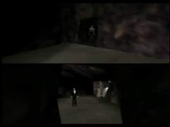
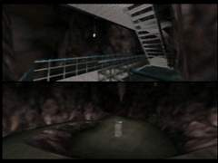
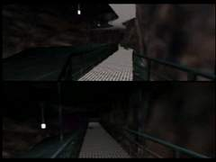
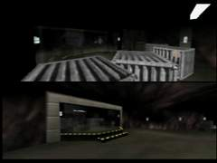
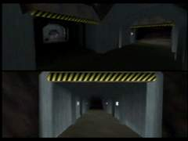
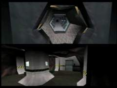

|
.
| Goldeneye
: Caverns |
Taille
- Trop
Grand, c'est son Défaut. Trop de lignes droites, de passages
vides, sans que l'on rencontre quelqu'un. Comme quoi... Autant le Niveau
est parfait en Solo, autant il perd beaucoup en puissance en Battle.
Et en plus en Battle il est plus petit ! Décor - Sombre, trop d'ailleurs, et assez Glauque. De jolis détails, mais sans le mobilier, le Niveau perd beaucoup. Armes - Je sais pas trop, j'ai jamais trop joué dans ce Niveau... Camping - Y doit y en avoir des tas, mais franchement leNiveau est trop grand pour voir passer quelqu'un. Le Campeur abandonne ce Niveau pour préferer Archives, Basement ou Complexe. A vous de voir ! |
 |
 |
 |
Le
Passage Secret du Mode Solo sert pas mal comme raccourci. En plus il
est bien sombre, mais Difficile à voir ! |
Ecran
du bas: là où ramene le Passage Secret. Ecran du Haut
: plus loin dans la meme direction. Un Baril au milieu... |
Les
Fameuses lignes droites qui gachent tout puisqu'on passe les trois quarts
de son Temps a cavaler sans rien trouver. |
 |
 |
 |
La
Salle de la Radio est la seule salle interessante à cause des
Caisses Grises pour se cacher. De plus, cette Salle a 2 Sorties bien
distinctes. |
Le
Couloir de la fin du Niveau en Solo. Bof... Autant en Mode Solo il laisse
un souvenir imperissable, autant là non... |
Le
Couloir de la Mort reste un bon endroit pour les fourberies. Le Campeur
aime bien s'enfermer dans l'Ascenseur ! |